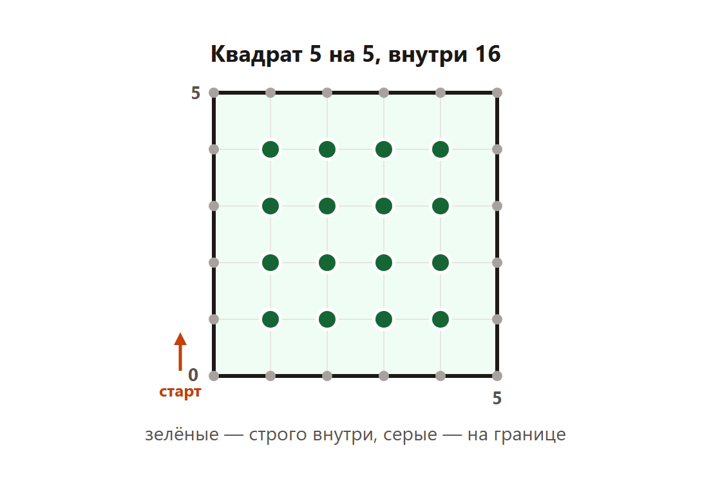

Страница для проверки. Сверху теория со схемами, ниже задания. Разбор всех задач — внизу, по шагам.
Что дают в задании 6
Черепаха рисует фигуру командами. Нужно посчитать точки с целыми координатами: строго внутри фигуры или на границе. Это разные вопросы, ответы не совпадают.
Старт в точке (0, 0). В начале черепаха смотрит вверх.
Вперёд k — пройти k клеток в ту сторону, куда смотрит.
Направо 90 — повернуться по часовой стрелке, не сходя с места.
Повтори n [ ... ] — выполнить команды в скобках n раз.
Квадрат со стороной 5
Команды: Повтори 4 [ Вперёд 5 Направо 90 ].

Сторона 5. Точки строго внутри — это сетка 4 на 4.
Ответ: 16.
На самой линии квадрата точек больше: по каждой стороне 5 шагов, четыре стороны, 4 × 5 = 20. Углы при таком счёте не дублируются. Внутрь их не включают.
Если в вопросе сказано «внутри», границу не прибавляют. 25 и 49 — разные ответы.
Демоверсия 2026
Черепаха умеет поднять хвост и пройти без линии, потом опустить хвост и нарисовать вторую фигуру. Спросить могут точки внутри объединения, включая границу. Каждую фигуру считают отдельно, общую точку берут один раз. Формулы одного прямоугольника остаются теми же.
Как считать без рисунка
Для прямоугольника со сторонами a и b, стороны которого идут по клеткам:
строго внутри: (a − 1) × (b − 1);
на границе: 2 × (a + b);
внутри и на границе: (a + 1) × (b + 1).
Для квадрата b = a. Сторона 5: внутри 4 × 4 = 16. Это та же формула.
Ответ: Старт в точке (0, 0), черепаха смотрит вверх; Вперёд 5 проходит 5 клеток; Направо 90 только поворачивает
2. Несколько верных
Внутри и граница
Квадрат со стороной 5. Что верно?
Вопрос «внутри» и вопрос «на границе» дают разные ответы
Строго внутри 16 точек
На границе 20 точек
Строго внутри 25 точек
Ответ: Вопрос «внутри» и вопрос «на границе» дают разные ответы; Строго внутри 16 точек; На границе 20 точек
3. Несколько верных
Формулы
Прямоугольник со сторонами a и b идёт по клеткам. Что верно?
Строго внутри: (a − 1) × (b − 1)
На границе: 2 × (a + b)
Внутри вместе с границей: (a + 1) × (b + 1)
Строго внутри всегда a × b
Ответ: Строго внутри: (a − 1) × (b − 1); На границе: 2 × (a + b); Внутри вместе с границей: (a + 1) × (b + 1)
4. Несколько верных
Прямоугольник 8 на 4
Команды: повторить 2 раза [вперёд 8, направо 90, вперёд 4, направо 90]. Что верно?
Сначала черепаха идёт вверх на 8
Потом она идёт вправо на 4
Строго внутри 21 точка
Строго внутри 32 точки
Ответ: Сначала черепаха идёт вверх на 8; Потом она идёт вправо на 4; Строго внутри 21 точка
5. Несколько верных
Квадрат со стороной 6
Квадрат, сторона 6. Что верно?
Строго внутри 25 точек
На границе 24 точки
Внутри вместе с границей 49 точек
Строго внутри 36 точек
Ответ: Строго внутри 25 точек; На границе 24 точки; Внутри вместе с границей 49 точек
6. Один верный
Внутри квадрата 5
Сколько целых точек строго внутри квадрата со стороной 5?
15
16
20
25
Ответ: 16
7. Один верный
Граница квадрата 5
Сколько целых точек на границе квадрата со стороной 5?
16
20
24
25
Ответ: 20
8. Один верный
Внутри прямоугольника
Прямоугольник: вверх 8, вправо 4. Сколько точек строго внутри?
12
20
21
32
Ответ: 21
9. Один верный
Внутри квадрата 6
Сколько точек строго внутри квадрата со стороной 6?
16
24
25
36
Ответ: 25
10. Один верный
Квадрат 6 целиком
Сколько целых точек у квадрата со стороной 6, если считать и внутренность, и границу?
24
25
36
49
Ответ: 49
11. Вписать число
Ответ: внутри квадрата 5
Квадрат, сторона 5. Сколько целых точек строго внутри? Только число.
Ответ: 16
12. Вписать число
Ответ: граница квадрата 5
Квадрат, сторона 5. Сколько целых точек на границе? Только число.
Ответ: 20
13. Вписать число
Ответ: прямоугольник
Вверх 8, вправо 4, и так же обратно. Сколько точек строго внутри? Только число.
Ответ: 21
14. Вписать число
Ответ: внутри квадрата 6
Квадрат, сторона 6. Сколько точек строго внутри? Только число.
Ответ: 25
15. Вписать число
Ответ: граница квадрата 6
Квадрат, сторона 6. Сколько точек на границе? Только число.
Ответ: 24
Разбор заданий
Так разбор выглядит после верного ответа или трёх ошибок.
1. Команды черепахи
Верно. Старт в точке (0, 0), черепаха смотрит вверх — Так задано в этой теории.
Верно. Вперёд 5 проходит 5 клеток — Число после «вперёд» — длина шага.
Верно. Направо 90 только поворачивает — С места черепаха при этом не сходит.
Неверно. Направо 90 проходит 90 клеток вправо — 90 — это угол поворота, не длина.
Ответ: Старт в точке (0, 0), черепаха смотрит вверх; Вперёд 5 проходит 5 клеток; Направо 90 только поворачивает.
2. Внутри и граница
Верно. Вопрос «внутри» и вопрос «на границе» дают разные ответы — Их нельзя подменять.
Верно. Строго внутри 16 точек — Сетка 4 на 4.
Верно. На границе 20 точек — 4 стороны по 5 точек, углы не дублируются.
Неверно. Строго внутри 25 точек — 25 — это внутренность квадрата со стороной 6.
Ответ: Вопрос «внутри» и вопрос «на границе» дают разные ответы; Строго внутри 16 точек; На границе 20 точек.
3. Формулы
Верно. Строго внутри: (a − 1) × (b − 1) — По каждой стороне отступаем на одну точку.
Верно. На границе: 2 × (a + b) — Для квадрата 5 это 20.
Верно. Внутри вместе с границей: (a + 1) × (b + 1) — Для квадрата 6 это 49.
Неверно. Строго внутри всегда a × b — a × b считает клетки, не внутренние точки.
Ответ: Строго внутри: (a − 1) × (b − 1); На границе: 2 × (a + b); Внутри вместе с границей: (a + 1) × (b + 1).
4. Прямоугольник 8 на 4
Верно. Сначала черепаха идёт вверх на 8 — В начале она смотрит вверх.
Верно. Потом она идёт вправо на 4 — После поворота направо.
Верно. Строго внутри 21 точка — 3 по ширине и 7 по высоте.
Неверно. Строго внутри 32 точки — 32 было бы 8 × 4, это площадь в клетках.
Ответ: Сначала черепаха идёт вверх на 8; Потом она идёт вправо на 4; Строго внутри 21 точка.
5. Квадрат со стороной 6
Верно. Строго внутри 25 точек — 5 × 5.
Верно. На границе 24 точки — 4 × 6.
Верно. Внутри вместе с границей 49 точек — 7 × 7.
Неверно. Строго внутри 36 точек — 36 — это все точки квадрата со стороной 5, включая границу.
Ответ: Строго внутри 25 точек; На границе 24 точки; Внутри вместе с границей 49 точек.
6. Внутри квадрата 5
Внутри сетка 4 на 4.
4 × 4 = 16.
20 — это граница, 25 — внутренность стороны 6.
Ответ: 16.
7. Граница квадрата 5
Формула границы: 2 × (5 + 5) = 20.
Точки внутри сюда не входят.
Ответ: 20.
8. Внутри прямоугольника
Ширина 4, высота 8.
Внутри (4 − 1) × (8 − 1) = 3 × 7.
3 × 7 = 21.
Ответ: 21.
9. Внутри квадрата 6
(6 − 1) × (6 − 1) = 5 × 5.
5 × 5 = 25.
24 — граница, 36 сюда не относится.
Ответ: 25.
10. Квадрат 6 целиком
Точек по стороне вместе с концами: 7.
7 × 7 = 49.
25 — только внутри, 24 — только граница.
Ответ: 49.
11. Ответ: внутри квадрата 5
По формуле (5 − 1) × (5 − 1).
4 × 4 = 16.
Ответ: 16.
12. Ответ: граница квадрата 5
2 × (5 + 5) = 20.
Углы считаются один раз.
Ответ: 20.
13. Ответ: прямоугольник
Ширина 4, высота 8.
(4 − 1) × (8 − 1) = 21.
Ответ: 21.
14. Ответ: внутри квадрата 6
(6 − 1) × (6 − 1) = 25.
Ответ: 25.
15. Ответ: граница квадрата 6
2 × (6 + 6) = 24.
Внутренние 25 сюда не входят.
Ответ: 24.
Черепаха: рисунок и счёт точек
Ниже два слоя. Первый — тот код, который копируют в среду с черепахой: окно, масштаб, команды и сетка точек. Второй — подсчёт без окна. На экзамене фигура чаще прямоугольник по клеткам, и число можно напечатать формулой. Формулу сверяют с рисунком на маленьких сторонах.
строго внутри: (a − 1) × (b − 1);
только граница: 2 × (a + b);
внутри вместе с границей: (a + 1) × (b + 1).
Код рисунка для прямоугольника 8 на 4. Его не запускают в этой проверке урока: окно может не открыться. Счётчики ниже запускаются и печатают ответы задач.
from turtle import *
tracer(0)
left(90)
screensize(2000, 3000) # размер окна
k = 22 # масштаб: чем больше k, тем крупнее рисунок
for i in range(2):
forward(8 * k) # МЕНЯТЬ: первая сторона, здесь высота 8
right(90)
forward(4 * k) # МЕНЯТЬ: вторая сторона, здесь ширина 4
right(90)
up()
for x in range(-5, 15): # ширина сетки: откуда и докуда ставить точки
for y in range(-5, 20): # высота сетки
goto(x * k, y * k)
dot(3, "red")
update()
done()
Что менять в рисунке. Числа 8 и 4 — стороны из условия. k = 22 — масштаб, на ответ не влияет, только на размер картинки. Границы циклов x и y — ширина и высота сетки: их расширяют, если фигура уехала из кадра. screensize — размер окна.
Счётчики к задачам урока
Каждая программа печатает одно число. Оно совпадает с ответом в разборе выше.
Черепаха, прямоугольник по клеткам: точки строго внутри.
def inside(a, b):
# Строго внутри прямоугольника, стороны по клеткам.
# Точки на линии не входят.
return (a - 1) * (b - 1)
a = 5 # МЕНЯТЬ: первая сторона
b = 5 # МЕНЯТЬ: вторая сторона. У квадрата a и b равны
print(inside(a, b))
Что менять, если условие другое.
a = 5 # МЕНЯТЬ: первая сторона
b = 5 # МЕНЯТЬ: вторая сторона. У квадрата a и b равны
Печать в конце оставляют: это и есть ответ.
Программа печатает 16.
Черепаха: точки только на границе.
def border(a, b):
# Только линия. Углы считаются один раз.
return 2 * (a + b)
a = 5 # МЕНЯТЬ: стороны фигуры
b = 5
print(border(a, b))
Что менять, если условие другое.
a = 5 # МЕНЯТЬ: стороны фигуры
Печать в конце оставляют: это и есть ответ.
Программа печатает 20.
Черепаха: проследить команды и посчитать внутренние точки.
def trace(commands):
# Старт (0, 0), смотрит вверх. Команды — пары ("forward", n) или ("right", 90).
x = y = 0
dx, dy = 0, 1
points = [(x, y)]
for kind, arg in commands:
if kind == "forward":
x += dx * arg
y += dy * arg
points.append((x, y))
elif kind == "right":
turns = (arg // 90) % 4
for _ in range(turns):
dx, dy = dy, -dx # поворот по часовой
return points
def strictly_inside(width, height):
# Для прямоугольника от (0,0) до (width, height).
count = 0
for x in range(width + 1):
for y in range(height + 1):
if 0 < x < width and 0 < y < height:
count += 1
return count
# МЕНЯТЬ: числа после forward — это длины из условия.
path = [
("forward", 8),
("right", 90),
("forward", 4),
("right", 90),
("forward", 8),
("right", 90),
("forward", 4),
]
corners = trace(path)
width = max(x for x, y in corners) - min(x for x, y in corners)
height = max(y for x, y in corners) - min(y for x, y in corners)
print(strictly_inside(width, height))
Что менять, если условие другое.
# МЕНЯТЬ: числа после forward — это длины из условия.
Печать в конце оставляют: это и есть ответ.
Программа печатает 21.
Черепаха, прямоугольник по клеткам: точки строго внутри.
def inside(a, b):
return (a - 1) * (b - 1)
a = 6 # МЕНЯТЬ: сторона
b = 6
print(inside(a, b))
Что менять, если условие другое.
a = 6 # МЕНЯТЬ: сторона
Печать в конце оставляют: это и есть ответ.
Программа печатает 25.
Черепаха: точки только на границе.
def border(a, b):
return 2 * (a + b)
print(border(6, 6)) # МЕНЯТЬ: обе шестёрки — стороны квадрата
Что менять, если условие другое.
print(border(6, 6)) # МЕНЯТЬ: обе шестёрки — стороны квадрата
Печать в конце оставляют: это и есть ответ.
Программа печатает 24.
Черепаха: внутренность вместе с границей.
def with_border(a, b):
# Внутри и граница вместе: по стороне a точек на одну больше.
return (a + 1) * (b + 1)
print(with_border(6, 6)) # МЕНЯТЬ: стороны